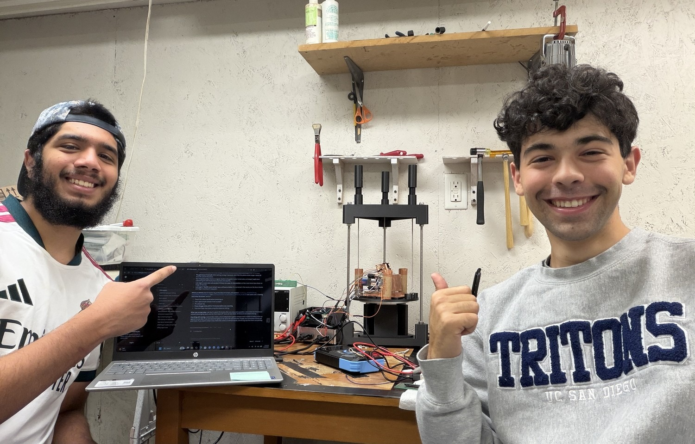
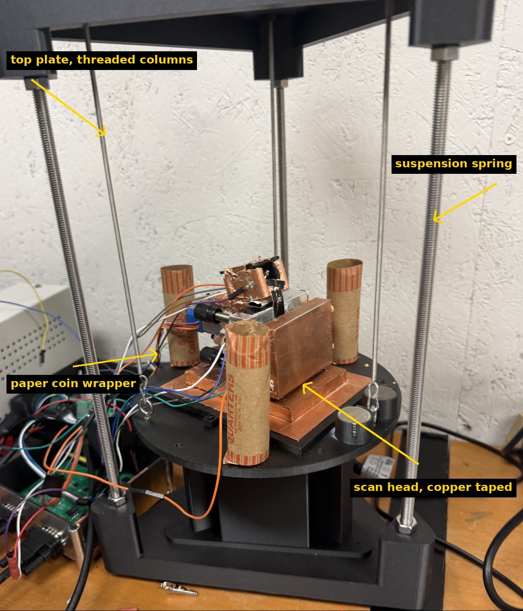
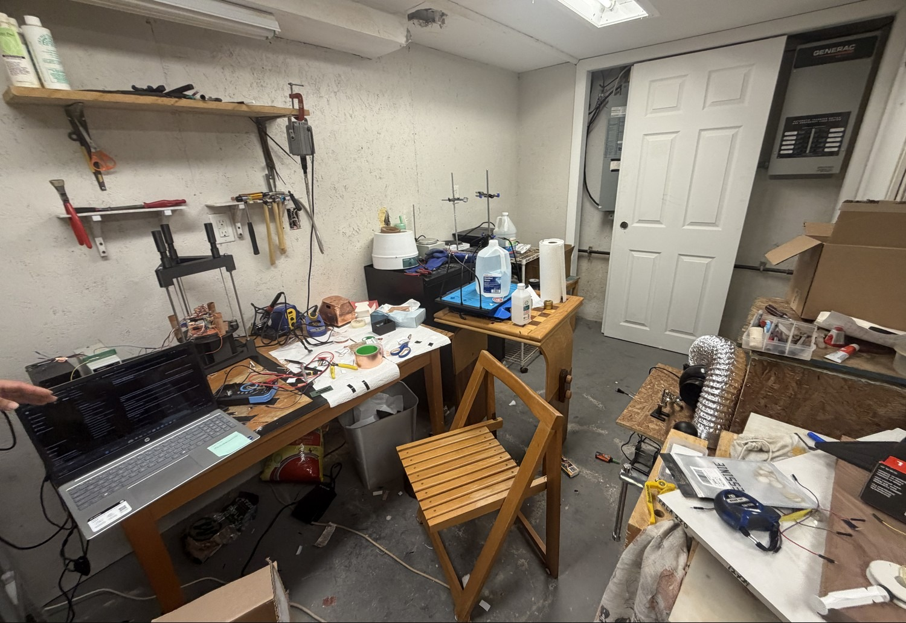
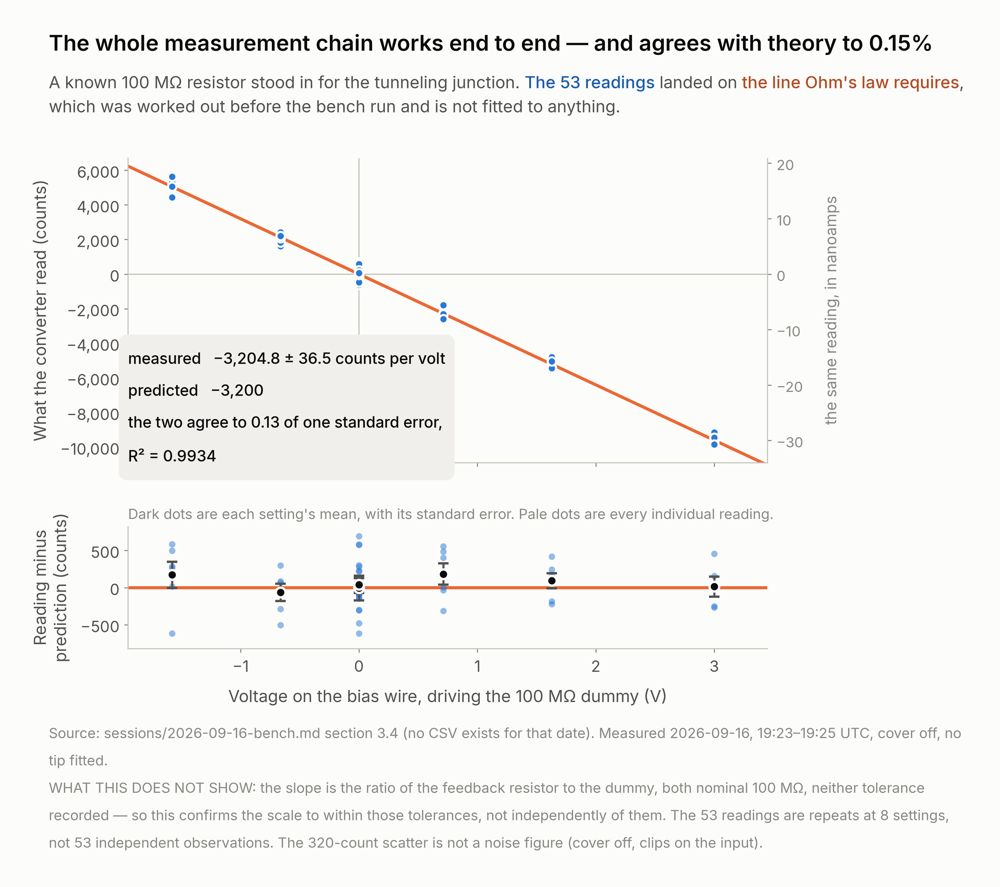
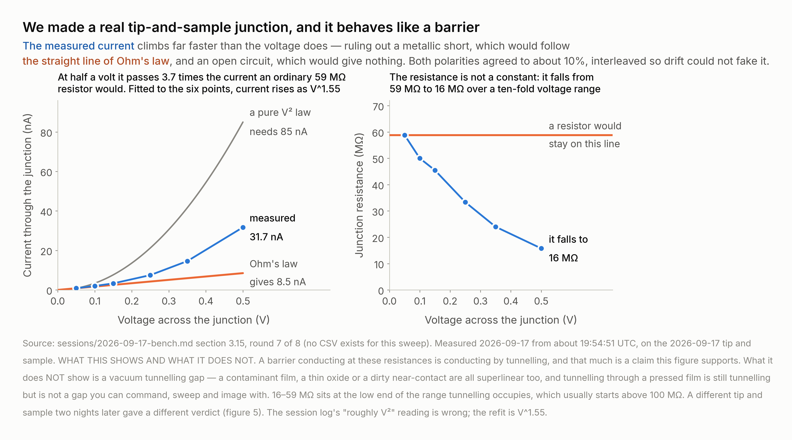
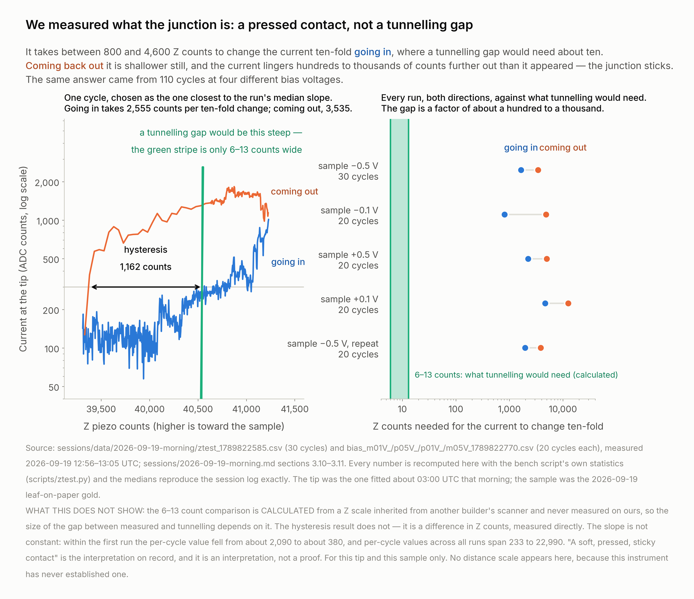
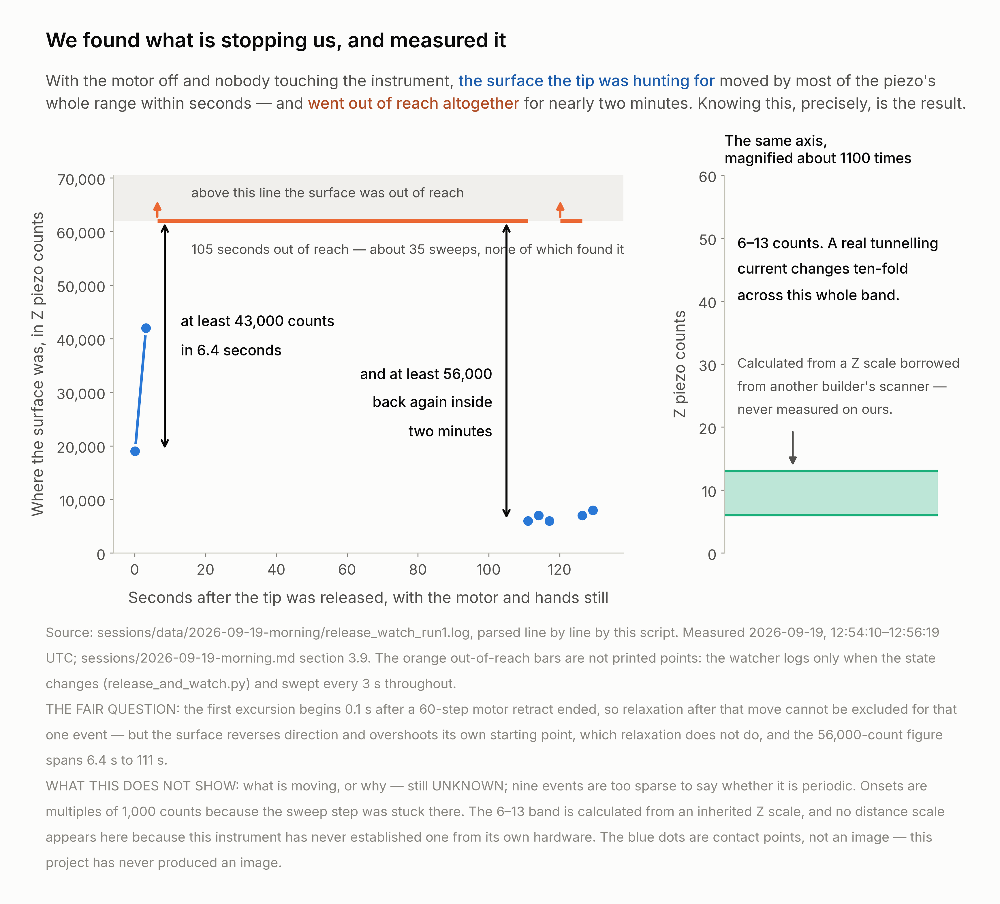
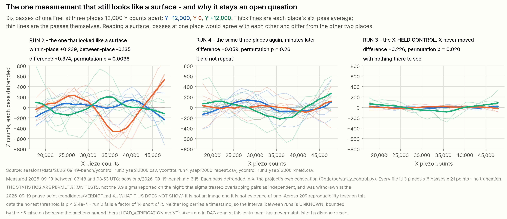

Instrument development · scanning probe microscopy
Every subsystem a tunnelling microscope needs is built, working and calibrated. The amplifier resolves picoamps, the chain agrees with theory to 0.13 of a standard error, and a real junction responds to voltage and to height. What is left is mechanical — and we measured it rather than guessing.

The team, at the bench, the instrument behind them. Nuh Shaheer left, Jacob Katz right — identification SAID by Jacob, 2026-09-19, who also permitted this frame to be published. IMG_8633, 2026-09-19 09:38:09.
Neither of us writes code, and neither of us had much electronics experience — this project was the first real soldering either of us has done. It was built and run in the basement of a house people live in, with people moving around and no control over the air or the temperature: a wooden bench on a concrete floor, a few metres from the breaker panel. Not a lab. Not a clean room. (Stated by Jacob Katz, 2026-09-19.)
This is not a disclaimer. It is the result. A tunnelling microscope is normally a clean-room instrument — commercial ones sit on air tables in temperature-controlled labs — and the blocker we found and measured is exactly the class of problem those rooms exist to remove. Stated up front, our limitation becomes a measurement of what this environment costs you.
There was no kit. We designed, ordered, printed, assembled, wired and characterised a complete scanning-probe measurement chain, and brought up every stage on its own before trusting the next one.
A Teensy 4.1 drives four 16-bit converters over a 1 MHz serial bus and a 26-way ribbon — X, Y and the sample bias at ±3 V, Z at ±10 V — moving a piezoelectric disc that carries the tip. Tip current goes into an OPA627 transimpedance amplifier with a 100 MΩ feedback resistor, in a hand-folded copper box as close to the tip as it physically fits, and is read back by a 16-bit LTC2326-16. Coarse approach is a 28BYJ-48 stepper on a lever. Frame, head and isolation stack are 3D-printed, and the platform hangs on three springs over an eddy-current damping stack. Control and analysis is Python on a laptop over USB.

The instrument, on the morning it came apart to be moved. Printed frame; springs down to the suspended platform; the copper-taped scan head on a copper-covered base plate; paper coin wrappers as added mass. IMG_8647, 2026-09-19 09:41:02. READ, except the coin mass, which is SAID by Jacob.

Where the work happened. A wooden bench on a concrete basement floor, a few metres from an electrical panel and a generator transfer switch. IMG_8631, 2026-09-19 09:35:33. READ — context for the vibration problem, not a measurement of it.
What is ours and what is not. Mechanics, controller and firmware follow Mech Panda’s red-panda-stm; the scan head and preamplifier follow Dan Berard’s home-built STM. Ours is the electronics bring-up, the software, the calibration, the controls and the fault isolation on the rest of this poster.
We took the tip and the sample out and clipped a known 100 MΩ resistor where the junction would be, then swept the bias across it. That makes the current something Ohm’s law fixes before the run — so the instrument is checked against a number it had no part in choosing.

Figure 1. Measured −3,204.8 ± 36.5 counts per volt against −3,200 predicted — agreement to 0.13 of one standard error, R² = 0.9934, 53 readings at 8 bias settings. Twelve stages had to be right at once for those points to land on that line, from the bias converter through the wire and the tip holder to the firmware and the PC tools. Source: sessions/2026-09-16-bench.md §3.4, measured 2026-09-16; re-fitted twice from the raw readings for this poster. What it does not show: the slope is the ratio of two nominally 100 MΩ resistors whose tolerances were never recorded, so it confirms the scale to within those tolerances rather than independently of them; and 53 readings are repeats at 8 settings, not 53 independent observations.
Getting a current is easy — push the tip into the sample and there is plenty. The hard part is showing you have a barrier: two conductors with something in between that the electrons have to cross.

Figure 2. Current rose from 0.85 nA at 0.05 V to 31.7 nA at 0.5 V — 3.7 times faster than Ohm’s law, fitting V1.55, with the junction resistance falling from 59 to 16 MΩ. Eight rounds with the polarities interleaved, so drift could not manufacture a slope; symmetric both ways to about 10%; confirmed by a bias-flip test on two separate nights, and noise does not reverse with the voltage. That rules out a metallic short, which would be ohmic, and an open circuit, which would give nothing. Source: sessions/2026-09-17-bench.md §3.15, 2026-09-17. Not the same claim as a vacuum tunnelling gap: a contaminant film or a thin oxide is superlinear too.
And the electronics are not what limits us — established with numbers rather than opinion. With no junction the chain is flat white noise at 8 to 14 counts from 2 Hz to 1.2 kHz; leakage through the tip lead is under 0.06 nA from −2 V to +2 V, more than 8 GΩ; and someone stamping two metres away moves one reading’s spread from 131 to 132 pA. The building is not getting in electrically. MEASURED 2026-09-17 and 2026-09-19, tip clear.
What separates a tunnelling gap from a contact is how fast the current changes as the tip moves. We ran it: 110 cycles in and out, at four bias voltages.

Figure 3. On the 2026-09-19 junction the current changed ten-fold per 1,650 to 1,970 Z counts going in, where a tunnelling gap on the inherited Z scale would need about 6 to 13 — and every run showed 705 to 1,868 counts of in-and-out hysteresis, a mechanical signature that depends on no distance scale and did not shrink when we cut the bias fivefold. That junction was a pressed contact: measured, and not in doubt. Source: sessions/data/2026-09-19-morning/, 12:56–13:05 UTC. What it does not show: the 6–13 figure is calculated from a Z scale borrowed from another builder’s scanner. The hysteresis does not depend on it.
Our best junction’s status is still undecided — on one unmeasured distance. The junction in panel 3 is a different tip and a different sample, two nights earlier, and its current changed ten-fold about seven times faster: roughly 250 Z counts per decade. Whether that was tunnelling turns on d, how far the tip stands from the line through the two ball supports, which sets the lever ratio between motor and tip. Below about 0.13 mm it was tunnelling; at 1 mm it was resting on something — and d has never been measured. Jacob’s estimate is “between 1 mm and 0 mm”: the threshold sits inside the range.
The experiment: take the plate off, lay a straightedge across the two ball ends, and see which side the tip stands on and by how much. No power, no electronics, a few minutes — and it settles our best junction retroactively.
To take an image, the gap has to hold still while the tip is swept. We stopped the motor, took our hands off the instrument, and watched where the surface was.

Figure 4. The surface moved by more than 43,000 Z counts within 6.4 seconds and by more than 56,000 within two minutes — most of the piezo’s whole range — and went out of reach altogether for 105 seconds. Source: sessions/data/2026-09-19-morning/release_watch_run1.log, 2026-09-19 12:54–12:56 UTC. The fair question: the fast excursion begins 0.1 s after a 60-step motor retract ended, so relaxation after that move cannot be excluded for that one event — but the motion reverses and overshoots its own starting point, which relaxation does not do, and the two-minute figure is measured long after any transient.
Why that ends the imaging question, in one comparison. Over the five seconds one image takes, the gap drifts 396 to 1,722 counts; the “structure” in every candidate image we have is 29 to 458 counts. The thing being measured is smaller than the way the gap moves while it is being measured. Five candidate causes, none yet tested: the leaf on its backing paper; the plate on its rubber bands and three balls; thermal motion; air currents; relaxation after a motor move. A cardboard box over the instrument is the free first test.
Every scan was re-run with the sideways sweep switched off. An X-held control has identical timing and identical loop behaviour, but the tip never travels across the surface — so it cannot contain surface structure at all, by construction. Like for like over full images, our scans repeat at +0.04 and their controls at +0.07: indistinguishable, and neither differs from zero.

Figure 5. One measurement resists that. Holding the tip at three places 12,000 Y counts apart, passes at the same place agreed +0.239 while passes at different places disagreed −0.135 — a difference of +0.374, permutation p = 0.0036. The repeat, minutes later, gave +0.056 (p = 0.26), and an X-held control, which cannot contain a surface, scored p = 0.020 on the same statistic — this instrument’s own false-positive rate. Across 209 reproducibility tests the honest threshold is p < 2.4 × 10−4, fixed before the candidates were judged. Source: sessions/data/2026-09-19-bench/ycontrol_run2, _run3, _run4. This is not an image, and we do not present it as one.
What keeps it open, and the experiment that closes it. The instrument’s own logs show the gap was steady across these runs — the onset moved 2,200 counts, about 3% of the Z range — so “the surface moved out from under it” is not the explanation, and genuine non-reproduction is better supported. But nothing in this project has ever measured how far the tip drifts sideways, and that is the one ground it stays open on. The answer: three runs with an X-held control interleaved between them, judged by a rule fixed in advance — real only if all three beat all the controls.